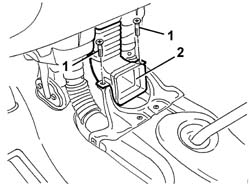

5010B56 DUCT between climate control casing and air duct to rear seats - R.R.
- Path
- Procedures > 50 AUXILIARY UNITS > 5010 CLIMATE CONTROL - MISCELLANEOUS > 5010B heating/ventilation air pipes and ducts > 5010B56 DUCT between climate control casing and air duct to rear seats - R.R.
- Kind
- repair procedure (removal / refitting; the operation number is the code)
- Applies to
- all engines; all production periods
- Interactive page
- https://sloeber94.github.io/elrnDB-a147/en/#/3025389
Applies to: all engines; all production periods
 Removing
Removing
 Refitting
Refitting7045A10 l/h or r/h front seat (one) - r+r (left and right sides)
7040A65 passenger compartment box lock , one , r r (left and right sides)
3380A44 handbrake/linkage protection - r+r
7040L28 tunnel switch panel - r r
1. Unscrew the bolts
2. Remove the duct.

Applies to: all engines; all production periods
Refitting
RemovingCheck that the duct is not damaged.
Place the duct in position and secure it using the bolts.
7040L28 tunnel switch panel - r r
3380A44 handbrake/linkage protection - r+r
7040A65 passenger compartment box lock , one , r r (left and right sides)
7045A10 l/h or r/h front seat (one) - r+r (left and right sides)
Topics linked from this page (6)
- 3380A44 handbrake/linkage protection - r+r
- 7040A65 passenger compartment box lock , one , r r
- 7040L20 tunnel trim - r r
- 7040L28 tunnel switch panel - r r
- 7045A10 l/h or r/h front seat (one) - r+r
- 7045B18 front seat arm rest
Topics that link to this page (12)
- 5040A80 expansion/connection pipe - r r
- 5040B30 expansion valve (tube orifice) - r+r
- 5040C10 air conditioner box - r+r
- 5040C15 air conditioner housing - r r with facia disconnected for versions with passenger airbag
- 5040C50 air conditioner heater radiator - r+r
- 5040C64 a/c evaporator - r+r
- 5040D84 air conditioner left hand air mixer flap control motor - r r
- 5040D90 air conditioner system wiring bundle - r r
- 5505C34 intergrated instrument under facia front air bag wiring - r r
- 5505C41 cabin wiring - r r
- 7040A97 facia trim support beam - r r
- 7040A98 instrument facia trim support beam - r r with facia removed